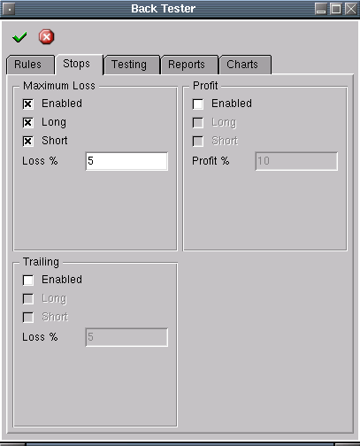

Back Tester Stops
This is where you set the stops used for the trading rule.

Maximum Loss:
- Enabled - Selected will turn on the stop for use in trading.
- Long - Selected will apply to all long trades.
- Short - Selected will apply to all short trades.
- Loss % - The maximum percentage loss on a single trade. => value
will trigger the stop.
Profit:
- Enabled - Selected will turn on the stop for use in trading.
- Long - Selected will apply to all long trades.
- Short - Selected will apply to all short trades.
- Profit % - The maximum percentage profit on a single trade. =>
value will trigger the stop.
Trailing:
- Enabled - Selected will turn on the stop for use in trading.
- Long - Selected will apply to all long trades.
- Short - Selected will apply to all short trades.
- Loss % - The maximum percentage loss from the highest profit on a
single trade. => value will trigger the stop. This is the typical trailing
stop loss.